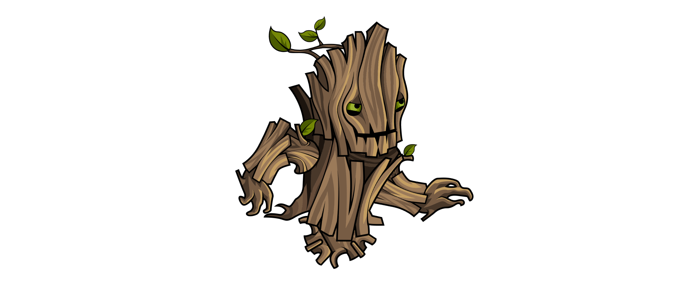
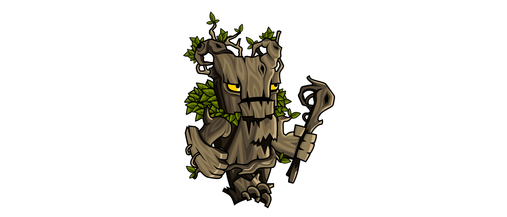
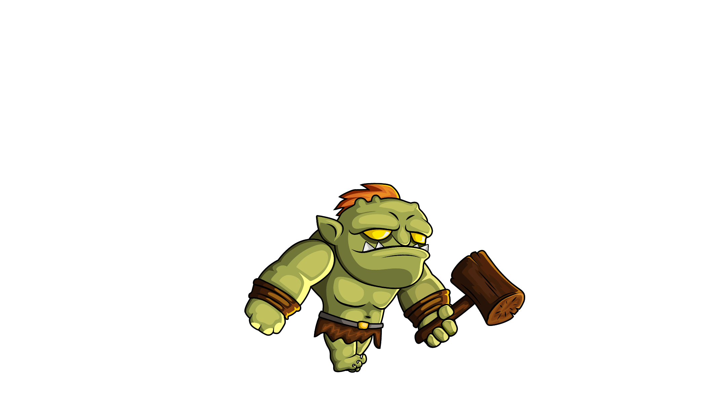
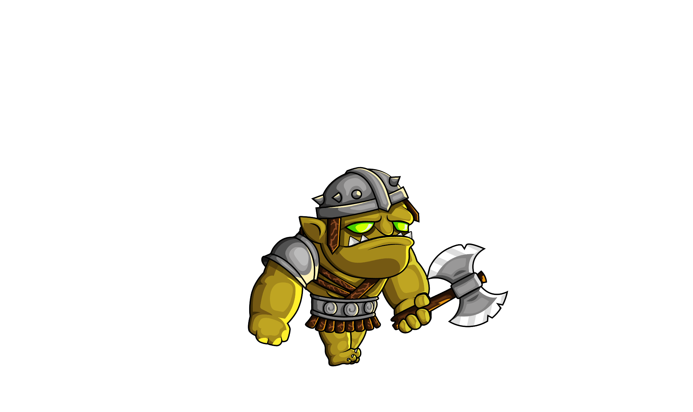
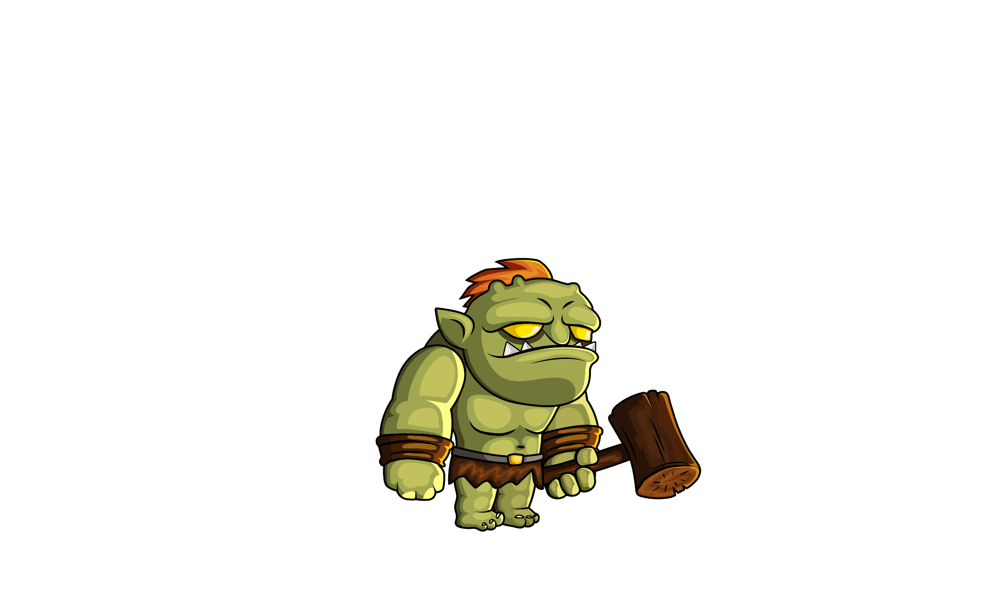

Spellroot Chronicles
Tief im Wald von Aldermoor wächst die Spellroot — eine uralte Wurzel, aus der seit Jahrhunderten die Magie des ganzen Landes fließt. Solange sie geschützt ist, blühen die Dörfer, die Ernten gedeihen, und die Zauberer der Akademie können ihre Kräfte weitergeben. Seit jeher wachen die Ents, uralte Baumwesen des Waldes, über die Wurzel und ihren Hain.
Doch eines Nachts wird die Spellroot gestohlen. Ein Orkstamm, angeführt von einem finsteren Kriegsherrn, dringt in den heiligen Hain ein und reißt die Wurzel aus dem Boden. Die dunkle Magie der Orks korrumpiert dabei die Ents selbst — die einstigen Wächter kämpfen nun, willenlos verdreht, an der Seite der Orks gegen jeden, der sich dem Stamm in den Weg stellt.
Ohne die Spellroot beginnt die Magie im Land zu verblassen — Kelan, ein junger Zauberlehrling, spürt als Erster, wie seine eigenen Kräfte schwächer werden. Sein Mentor Emric, ein alter, kampferprobter Magier, schickt Kelan los, um die Spellroot zurückzuholen, bevor die Magie ganz erlischt.
Der Weg führt zunächst durch den verfluchten Wald, wo die korrumpierten Ents jeden Eindringling aufhalten wollen — angeführt von einem gewaltigen, uralten Ent-Wächter, der einst selbst die Spellroot beschützte. Wer ihn besiegt, gelangt weiter in die Tiefen der Orkfestung, vorbei an Kreaturen, die vom schwindenden Zauber selbst korrumpiert wurden.
Am Ende der Reise wartet der Anführer der Orks: ein Endboss, der die gestohlene Kraft der Spellroot für sich selbst missbraucht. Nur wer ihn besiegt, kann die Wurzel zurückbringen und das Gleichgewicht der Magie wiederherstellen.
Charaktere
Kelan
Der junge Zauberlehrling. Spürt als Erster den Verfall der Magie und zieht los, um die Spellroot zurückzuholen.
Emric
Kelans erfahrener Mentor. Ein alter, kampferprobter Magier, der Kelan auf seine Mission schickt.
Gegner

Korrumpierter Ent
Einst Wächter des Hains, jetzt von der dunklen Magie der Orks verdreht und kampfbereit gegen jeden Eindringling.

Der uralte Ent-Wächter
Der größte und älteste der korrumpierten Ents. Bewacht den Weg aus dem Wald hinaus.

Ork-Krieger
Einfache Soldaten des Orkstamms, die die Festung und ihren Kriegsherrn bewachen.

Der Ork-Kriegsherr
Anführer des Orkstamms und Dieb der Spellroot. Der letzte Widersacher auf Kelans Weg.
Items
Magiekristall
Überreste der versickernden Magie der Spellroot. Werden im Level eingesammelt.
Zaubertrank
Wird gesammelt und kann auf Gegner geworfen werden, um ihnen Schaden zuzufügen.
.png)
Schriftrolle
Eine alte Heilschrift der Akademie. Stellt beim Einsammeln Lebensenergie wieder her.
.png)
Zauberbuch
Schaltet für kurze Zeit Kelans Nahkampf-Angriff frei, um Gegner direkt zu treffen.
Attacken

Nahkampf-Angriff
Nach dem Einsammeln eines Zauberbuchs kann Kelan Gegner in Reichweite direkt angreifen und Schaden austeilen.
Trankwurf
Ohne aktives Zauberbuch wirft Kelan stattdessen einen gesammelten Zaubertrank in Blickrichtung, der Gegnern bei Treffer Schaden zufügt.

Nahkampfschlag der Orks & Ents
Gegner fügen Kelan bei Berührung Schaden zu — außer er springt von oben auf sie herab und schaltet sie mit einem Stampfangriff aus.
Fernangriff der Endgegner
Kommt Kelan zu nahe, laufen die Endgegner schneller auf ihn zu. Aus der Distanz schießen sie außerdem magische Geschosse ab.